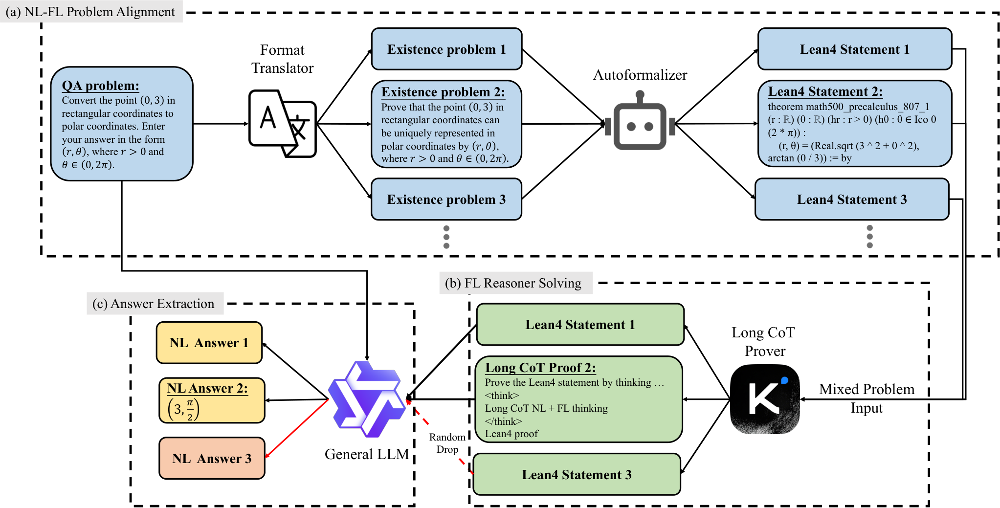

Autoformalizes natural-language QA math problems into Lean4 existence theorems and uses a Lean4 prover (Kimina-Prover) whose reasoning yields answers.
Abstract
Enhancing the mathematical reasoning capabilities of LLMs has garnered significant attention in both the mathematical and computer science communities. Recent works have made substantial progress in both Natural Language (NL) reasoning and Formal Language (FL) reasoning by leveraging the potential of pure Reinforcement Learning (RL) methods on base models. However, RL approaches struggle to impart new capabilities not presented in the base model, highlighting the need to integrate more knowledge like FL into NL math reasoning effectively. Yet, this integration is challenging due to inherent disparities in problem structure and reasoning format between NL and FL. To address these challenges, we introduce **NL-FL HybridReasoning (NFL-HR)**, an end-to-end framework designed to incorporate the FL expert into NL math problem-solving. To bridge the NL and FL input format gap, we propose the NL-FL Problem Alignment method, which reformulates the Question-Answering (QA) problems in NL as existence theorems in FL. Subsequently, the Mixed Problem Input technique we provide enables the FL reasoner to handle both QA and existence problems concurrently. Lastly, we mitigate the NL and FL output format gap in reasoning through an LLM-based Answer Extraction mechanism. Comprehensive experiments demonstrate that the NFL-HR framework achieves **89.80**% and **84.34%** accuracy rates on the MATH-500 and the AMC benchmarks, surpassing the NL baseline by **4.60%** and **4.82%**, respectively. Notably, some problems resolved by our framework remain unsolved by the NL baseline model even under a larger number of trials.
Problem
Reinforcement-learning methods for natural-language math reasoning in LLMs mostly refine abilities the base model already has. Formal-language (FL) reasoning knowledge could help, but NL and FL problems differ in structure and in output format.
Approach
NFL-HR first rewrites a QA-style NL problem as an NL existence problem with a general LLM, then autoformalizes it into a Lean4 existence theorem. A Mixed Problem Input technique feeds both the NL QA problem and the Lean4 statement to a Long-CoT Lean4 prover. An LLM-based Answer Extraction step then recovers the implicit NL answer from the prover's reasoning trace.

Figure 1: NL-FL HybridReasoning (NFL-HR) framework: (a) NL-FL Problem Alignment: We first translate the QA-style NL problem into the NL existence problem using a general LLM, followed by converting the problem into an FL existence theorem through an autoformalizer. (b) FL Reasoner Problem Solving: We then apply the mixed problem input technique to ask the FL reasoner to concurrently address the QA
Results
With pass@16, NFL-HR reaches 89.80% on MATH-500 and 84.34% on AMC, which is 4.60% and 4.82% above the NL baseline. It improves on every MATH-500 subject, with the largest gain in geometry (+14.63%). It also solves some problems the NL baseline fails even with 64 trials.